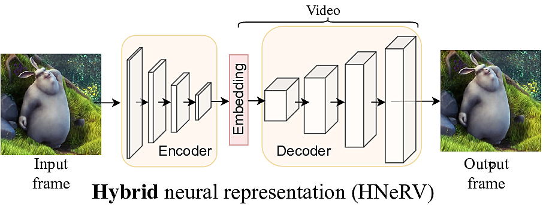
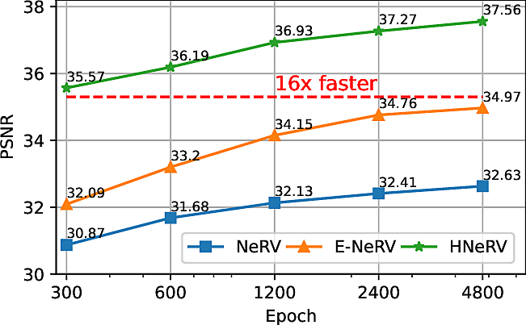
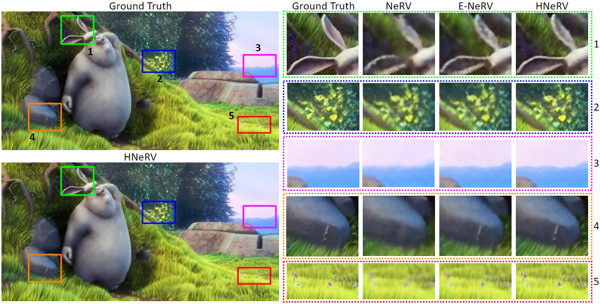
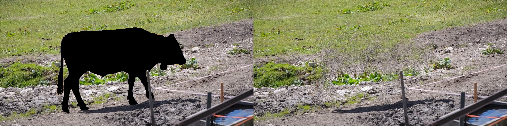
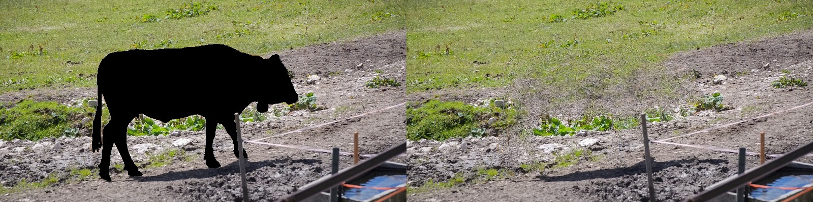

HNeRV: A Hybrid Neural Representation for Videos CVPR 2023 Code
- Hao Chen1 Matthew Gwilliam1, Ser-Nam Lim2,
- Abhinav Shrivastava1
Abstract
Implicit neural representations store videos as neural networks and have performed well for vision tasks such as video compression and denoising. With frame index and/or positional index as input, implicit representations (NeRV, E-NeRV, etc.) reconstruct video frames from fixed and content-agnostic embeddings. Such embedding largely limits the regression capacity and internal generalization for video interpolation. In this paper, we propose a Hybrid Neural Representation for Videos (HNeRV), where learnable and content-adaptive embeddings act as decoder input. Besides the input embedding, we introduce a HNeRV block to make model parameters evenly distributed across the entire network, therefore higher layers (layers near the output) can have more capacity to store high-resolution content and video details. With content-adaptive embedding and re-designed model architecture, HNeRV outperforms implicit methods (NeRV, E-NeRV) in video regression task for both reconstruction quality and convergence speed, and shows better internal generalization. As a simple and efficient video representation, HNeRV also shows decoding advantages for speed, flexibility, and deployment, compared to traditional codecs (H.264, H.265) and learning-based compression methods. Finally, we explore the effectiveness of HNeRV on downstream tasks such as video compression and video inpainting.
1) HNeRV overview


2) HNeRV architecture
Balanced parameters
K: (Kmin, Kmax);
r = Cout / Cin.
We increase kernel sizes and channel withs (smaller r) for higher layers, to balance parameters.
3) Video Regression
Visualization results
4) Video Decoding
5) Internel Generalization
Embedding interpolation results
6) Video Compression
Overall results on UVG dataset

Best & owrst cases on UVG dataset
7) Video inpainting
 

HNeRV input HNeRV output